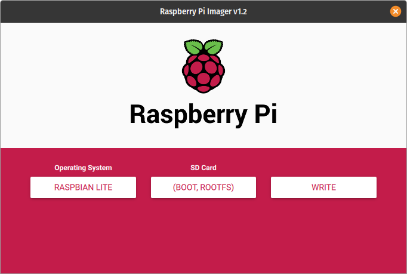
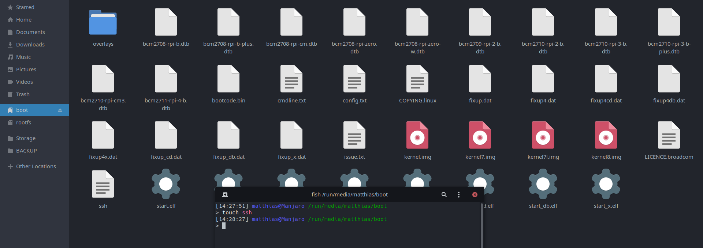
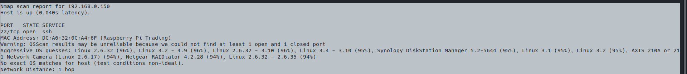
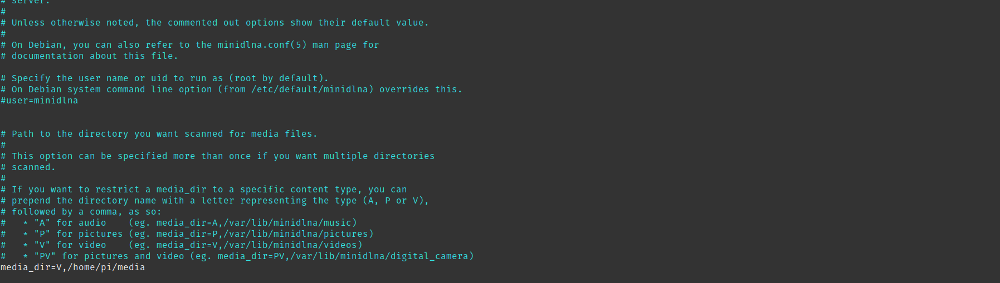

In deze tutorial zal stap voor stap beschrijven hoe je de perfecte travel companion zal maken met een raspberry pi. Het uiteindelijke doel is een draagbare streaming box waarmee er muziek, video's en foto’s kan gestreamd worden. Deze pi kan ook aangesloten worden op het thuisnetwerk zodat je deze functies ook thuis kan gebruiken.
Benodigheden
- Raspberry pi 3 / 4
- powerbank
- sdkaart
- usb met media (hoeft niet als sdkaart groot genoeg is)
- ethernet kabel voor de setup te vergemakkelijken.
1 Voorbereiding
Flashen van raspian lite op een sdkaart. Raspberry heeft recent hun eigen flashing tool uitgebracht die dit proces nog makkelijker maakt. Download op de volgende link de image flasher voor uw operating system. https://www.raspberrypi.org/downloads/ . Flash dan raspbian lite en wacht tot dit proces gedaan is.
Eens de sdkaart geflashed is, voeg dan in het bootmapje een bestand toe met de naam ssh. Dit zal zorgen dat je bij de eerste boot kan verbinden met ssh. Zo Hoef je geen extern scherm te gebruiken. (ik doe dit op linux, dus dit zal er anders uitzien in windows of mac)
Eens dit gelukt is, steek de sdkaart in de pi, verbind de pi met een router/switch aan de hand van een ethernet kabel en steek de pi aan.
Wacht 2 min. Nu moet de pi vindbaar zijn op het netwerk. De pi is het makkelijkste vindbaar met de tool nmap. Je kan met deze tool het thuisnetwerk scannen achter toestellen met poort 22 open. Deze poort staat voor ssh. nmap -p22 192.168.0.0./24.
Als dit comando niet goed werkt, dan kan je de pi ook vinden aan de hand van een andere nmap scan.
sudo nmap -O 192.168.0.0/24 vervang sudo door de administrator in cmd op windows. (run cmd as administrator)
Bij mij heeft de pi het ip adress 192.168.0.150, dus nu kunnen we verbinden aan de hand van het volgende commando: ssh pi@192.168.0.150. Het standaard wachtwoord is raspberry.
Ten eerste zullen we een update doen van de pi. Dit zal echter niet lang duren. Een pi hoeft ook niet te rebooten na een update. sudo apt-get update && sudo apt-get upgrade. Hierna zullen we zorgen dat ssh altijd aanstaat, want nu is deze enkel aan voor deze sessie, een de pi reboot is deze weg. sudo systemctl enable sshd && sudo systemctl enable ssh. Dit zorgt dat de pi opstart me ssh aan.
We zullen nu eerst de landcode van de pi in orde brengen. Doe dit aan de hand van sudo raspi-config. Ga dan In dit menu naar localisation en kies dan change wifi country. Duid daar België aan.
Het is ook best practise en zeker aangeraden om het wachtwoord van de pi te veranderen. Dit is een must als je de pi wilt open zetten door bepaalde poorten te forwarden. sudo passwd pi.
We zullen de pi tenslotte een statisch ip geven voor op het thuisnetwerk. Zo hoef je niet telkens nmap te gebruiken om de pi te vinden op het netwerk.
Voeg onderstaande lijnen toe aan de hand van sudo nano /etc/dhcpcd.conf.
interface eth0
static ip_address=192.168.0.151/24
static routers=192.168.0.1
static domain_name_servers=192.168.0.1
Met deze lijnen toegevoegd, zal de pi vindbaar zijn onder het adres 192.168.0.151. Dit adres mag zelf gekozen worden, maar het moet tussen 192.168.0.1 – 192.168.0.254 liggen en het moet nog beschikbaar zijn. Test deze configuratie door de pi te rebooten. (sudo reboot)
normaal kan je nu door ssh pi@192.168.0.151 uit te voeren in cmd verbinden met de pi met uw nieuw ingesteld wachtwoord.
2 Beveiliging
Dit is erg belangrijk als je de pi wilt gebruiken in een andere locatie dan thuis.
Momenteel kan de gebruiker inloggen met zijn eigen gekozen wachtwoord. Dit is al iets veiliger dan wat we vooraf hadden, maar nog niet foolproof. Je kan echter inloggen zonder wachtwoord, maar met keys die gemaakt worden door uw pc. Dit is bijna onmogelijk om te kraken. We zullen ook fail2ban installeren, die zorgt dat tussen elke inlogpoging een vertraging zit en naar 3 mislukte pogingen, moet de aanvaller 10 minuten wachten voordat hij weer kan inloggen. Dus een combinatie van de keys en fail2ban is een must.
Fail2ban is echter de makkelijkste om in orde te krijgen. Dit kan door 1 command uit te voeren sudo apt install fail2ban. That’s it.
Om de keys in orde te krijgen, zullen we commando’s moeten uitvoeren op de pi en op de pc die wilt verbinden met de pi. Voer op beide machines het volgende commando uit: ssh-keygen(werkt op linux, windows en mac). Door dit commando uit te voeren, zal de pi en de verbonden pc elk 2 sleutels maken. Een publieke sleutel en een private sleutel. Door wiskundige combinaties te maken bij het verbindt proces, is dit echter bijna onmogelijk om te kraken. Dus zoek op uw pc uw publieke sleutel en steek die op de pi in het bestand .ssh/authorized_keys. Door dit toe te voegen, kan u nu normaal inloggen zonder wachtwoord.
Voer enkel deze onderstaande stappen uit als de vorige beveilingsstappen werken, anders zal je niet meer kunnen verbinden met ssh.
Verander in dit bestand /etc/ssh/sshd_config de optie #PasswordAuthentication yes naar PasswordAuthentication no. Dit zal zorgen dat er geen paswoorden meer toegelaten zijn.
Tot zover beveiliging. Nu kan de pi veiliger gebruikt worden.
3 Router/access point
Nu werkt de pi al perfect voor intern gebruik, maar dat willen we niet. We willen de pi overaan in een powerbank kunnen steken en er dan mee verbinden aan de hand van een eigen gemaakte wifi netwerk.
Voor daarom onderstaande commando’s uit:
sudo apt install dnsmasq hostapd
sudo systemctl stop dnsmasq
sudo systemctl stop hostapd
sudo nano /etc/dhcpcd.conf
Voeg in dit bestand onderaan onderstaande lijnen toe:
interface wlan0
static ip_address=192.168.4.1/24
nohook wpa_supplicant
Dit zorgt dat alle toestellen die verbinden met de pi, de pi kunnen vinden op dit ip. De ip’s die de pi zal uitgeven(in latere stappen), zullen ook in het 192.168.4.1 bereik zitten.
Om deze file zijn configuratie toe te passen, voer volgend commando uit:
sudo service dhcpcd restartWe zullen nu de dhcp range instellen. Voer volgende commando’s uit: sudo mv /etc/dnsmasq.conf /etc/dnsmasq.conf.orig sudo nano /etc/dnsmasq.conf Voeg in dit bestand onderstaande lijnen toe: interface=wlan0 # Use the require wireless interface - usually wlan0 dhcp-range=192.168.4.2,192.168.4.20,255.255.255.0,24h
Start dan de dnsmasq service: sudo systemctl start dnsmasq In de volgende stap, zullen we de access point configuren. Voer volgende commando’s uit: sudo nano /etc/hostapd/hostapd.conf In dit bestand plakken we volgende lijnen:
interface=wlan0
driver=nl80211
ssid=NaamVanNetwerk
hw_mode=g
channel=7
wmm_enabled=0
macaddr_acl=0
auth_algs=1
ignore_broadcast_ssid=0
wpa=2
wpa_passphrase=PasswoordVanNetwerk
wpa_key_mgmt=WPA-PSK
wpa_pairwise=TKIP
rsn_pairwise=CCMP
4 Het installeren van de leuke tooltjes
Nu komen we in het leuke deel, waar we eindelijk de tools kunnen installeren voor het mediastreamen. Ik hou het graag simpel en licht. Het is tenslotte maar een klein boordcomputertje.
Ik raad aan voor een samba op te zetten. Dan kan je gewoon de bestanden die je wilt streamen kopiëren en plakken zoals op een simpele usb. Dus door het uitvoeren van de volgende commando’s, hebben we alle programma’s die we uiteindelijk nodig hebben. sudo apt install samba minidlna. Ik ben persoon fan van de minidlna, want hiermee kan je makkelijk media vanop je pi delen aan de hand van het upnp protocol. Uiteindelijk zal je aan de media geraken met een app zoals vlc. Ik raad persoonlijk vlc aan, want dit werkt op elk platform.
Ik vind het het makkelijkst om 1 map te delen en daar alles in de zetten. Dit is ook iets beter qua veiligheid. Dus ik ga een map media maken in de homefolder aan de hand van mkdir media. Voeg dan in de samba conf (sudo nano /etc/samba/smb.conf) volgdende lijnen toe:
[files]
path =/home/pi/media
valid users = pi
read only = no
writeable = yes
Om de user pi een sambapasswoord te geven: smbpasswd -a pi. Nu kan je vanuit windows, lunix of mac rechtstreeks verbinden vanuit de file explorer en zo bestanden toevoegen aan de map media.
Als laatste stap moeten we nog minidlna configuren. Dit doen we in aan de hand van sudo nano /etc/minidlna.conf. En voeg deze lijn toe (media_dir=V,/home/pi/media)in op de plaats zoals in de screenshot.
Ik hoop dat deze tutorial duidelijk was en de pi nog iets leuker maakt.